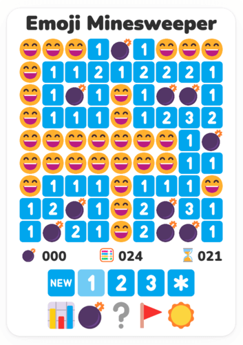
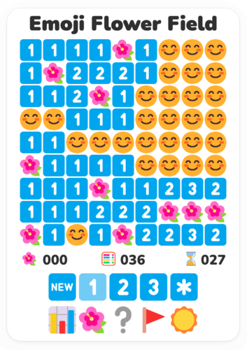
Emoji Minesweeper is a logic puzzle game, a variant of the classic minesweeper game reimagined and implemented using emoji! It features a grid of clickable squares, with hidden mines (or flowers) scattered throughout the board. Safe squares have numbers telling you how many mines touch the square. If there is no number, the square doesn't touch any mine. You can use the number clues to solve the game by opening all of the safe squares. If you click on a mine you lose the game!
Emoji Minesweeper always makes the first click safe. You open squares with the left mouse button and put flags on mines with the right mouse button (or with long press on touchscreens). You can also chord with the left mouse button or middle mouse button once a numbered square has the correct number of adjacent flags.
The game ends when all safe squares have been opened (win) or when a square containing a mine is opened (loss). If you win, the empty square get filled with happy faces 😄, and if you lose they get filled with sad faces 😵.
There are four levels (beginner, intermediate, expert, and custom) and six themes (mine 💣, flower 🌺, mushroom 🍄, bear 🐻, surf 🏄, and Japan 🏯) to choose from.
Lastly, players can choose between light ☀️ and dark 🌔 mode.
How to Play
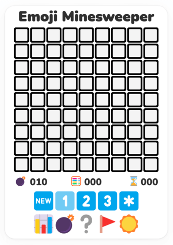
This is the user interface of Emoji Minesweeper. Such a colorful amalgamation of emoji! On the top, you can see a grid of squares: the board. The black square button emoji 🔲 means that the square has not been opened yet. Left-click on any square to open it, and start the game. You don't have to worry about your first move, as we have made sure that your first square can never contain a mine (actually it can, but if that's the case, we relocate the mine to another square so fast that you don't even realize it - you can thank us later). Right below the board you can find three counters.
On the left you can find the mine counter 💣. It shows the number of mines on the board without flags (we will talk about flagging shortly).
In the middle, next to the abacus 🧮 you can find the moves counter. It keeps track of how many moves you have made since the beginning of each game. By moves we mean all the clicks (left and right) or taps you have made on the board.
Finally, on the right, you can find an ⌛ hourglass and, more importantly, the time counter, keeping track of time: seconds passed since you opened the first square. Now let's go back to our game.
![Board]()
After you click on a square, you will get something like this. When you open a square that does not touch any mines, it will be opened and the adjacent squares will automatically be opened in all directions until reaching squares that contain numbers. A common strategy for starting games is to randomly click until you get a big opening with lots of numbers.
The empty squares ⬜️ are safe squares that do not touch any mines. Some safe squares have numbers telling you how many mines touch the square. The numbered squares can be either 1️⃣, 2️⃣, 3️⃣, 4️⃣, 5️⃣, 6️⃣, 7️⃣, 8️⃣. Why don't we have nine as well? Because each square can be touched by eight squares at most. Most squares are touched by eight other squares. If a square is located on the border of the board, it is touched by six other squares (as one of its sides is not touched by anything), and if a square is located in one of the four corners of the board, it is touched by only three other squares. Let's see an example.
![Section]()
Let's focus on the 1️⃣ square in the middle. It is touched by eight other squares (oh, by the way, diagonal squares count as well). We can observe that all its surrounding squares but one have been opened and are safe. On its left, we can see three empty squares and on its top, bottom, and right we can see four numbered squares and a closed one. Since its number is 1️⃣, it has to be touched by exactly one mine. Thus, we can safely assume that the closed square will contain a mine.
![Flag]()
In order to make our life easier, and keep track of the squares containing mines, we can right-click on these squares and flag them 🚩 using a red flag.
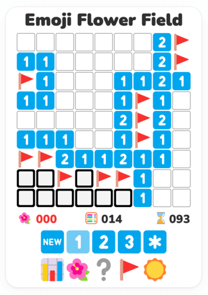
Be careful, because if you flag more squares than the total number of mines, you won't be able to finish the game, until you unflag some squares. Fortunately, we've got you covered on that too, as the mine counter will turn red if you do so.
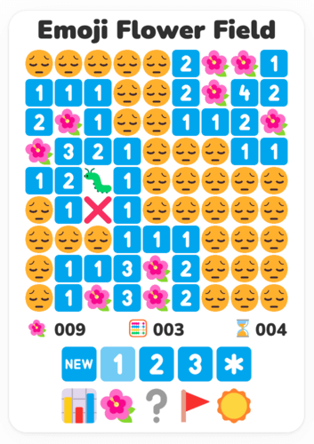
If you click on a mine you lose the game. If you had wrongly flagged any squares as mines they will be marked with an ❌, to help you identify your mistakes.
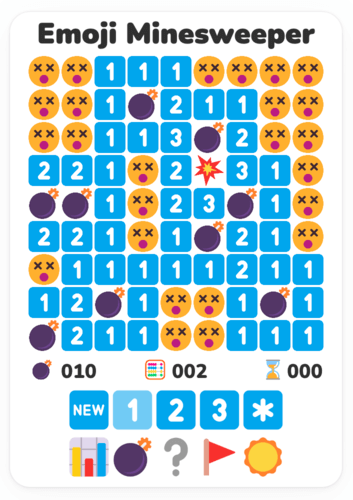
Yeah, losing looks like this.
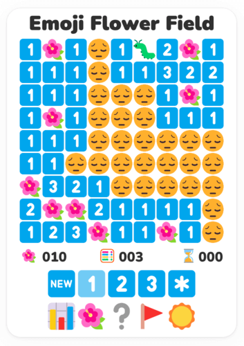
Or like this.
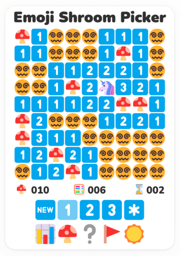
Or like this. Not too bad, huh? In order to win a game, you need to open all the safe squares. When you win or lose a game you need to start a new one. You can achieve that by clicking on the 🆕 button or by pressing the N key.
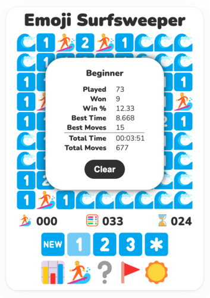
In order to keep track of how good (or bad) you are doing, the game keeps your stats. To open the stats modal, click the 📊 button. Stats include metrics such as games played, games won, percentage of wins, best time, best moves, total time, and total moves, and are kept separately for beginner, intermediate, and expert. Custom levels and debug mode do not save stats; if you try to open stats there, the game shows a short message instead of opening the modal. Don't worry if you are not doing that well, as you can always clear your data by clicking on the Clear button, located inside the stats modal. You can also toggle the stats modal by pressing the S key.
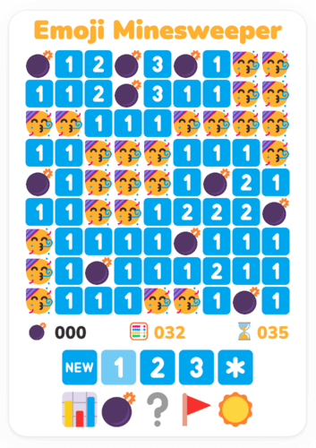
If you do a new best time or win the game by fewer moves than ever before, not only are your stats updated accordingly, but empty squares become the partying emoji 🥳. The respective counters turn gold as well. In these examples, the player achieved both a new time record and a moves record, thus both counters have turned gold.
There are four difficulty levels, with different board sizes and numbers of mines. Along with the classic and predetermined beginner, intermediate, and expert levels, there's a custom level as well, giving players the ability to set the dimensions of the board, as well as the number of mines. Custom levels allow you to create boards as large as 100x100. Mines must cover at least 10% of the squares. If the number of mines you choose falls below the minimum requirement, it will automatically adjust to meet the necessary threshold. If a custom configuration exactly matches a standard level, such as 9x9 with 10 mines, the game switches to that standard level instead of creating a custom level.
| Level | Dimensions | Mines | % of Mines |
|---|---|---|---|
| Beginner | 9x9 | 10 | ~12.34% |
| Intermediate | 16x16 | 40 | ~15.63% |
| Expert | 30x16 | 99 | ~20.63% |
You can use the level buttons 1️⃣2️⃣3️⃣*️⃣ to switch between levels. You can also use the keyboard keys 1, 2, 3, and 4. Pressing 4 switches to the saved custom level, while pressing 5 opens the custom level modal. Intermediate, expert, and custom are desktop-only on small/mobile screens; the game shows a short message if those controls are used on a screen that is too narrow.
If you click the *️⃣ button, the custom level modal will appear.
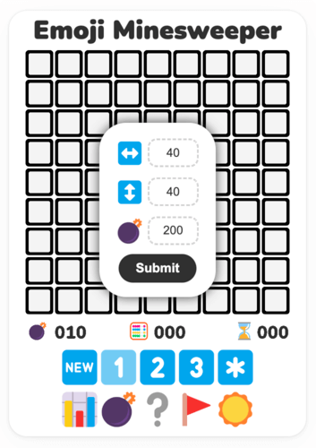
Here you can choose the width, the height, and the number of mines for your desired custom level. When opened with the 5 key, the cursor starts in the columns input. Press Enter to move to rows, Enter again to move to mines, and Enter once more to submit. You can also click Submit, and your custom level will appear!
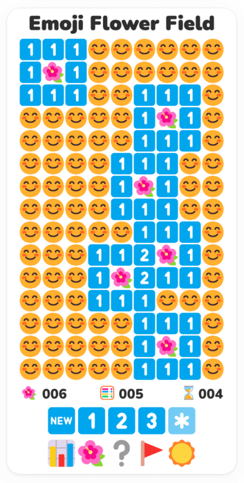
This is a custom level featuring 9 columns, 15 rows, and 14 mines. Quite long, isn't it?
End modal
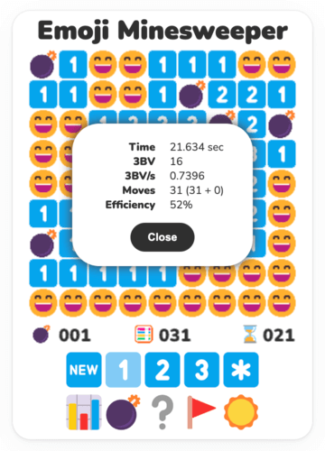
When a game is won, a modal containing stats about the current game appears. If you close it with the Close button or by clicking outside it, clicking or tapping anywhere inside the board opens it again. Let's see what's included:
Time
The time it took to finish the game in seconds, from opening the first square until the last. It is the same time visible in the time counter, but now it is not rounded and is displayed in precision with up to three decimal digits.
3BV
3BV is the minimum number of clicks required to complete a board without using flags. The higher it is, the more difficult the game is.
3BV/s
3BV divided by the amount of seconds needed to finish the game. It indicates the amount of 3BV that a player solves per second and is meant as a speed-measuring statistic. For an expert game, a 3BV/s of 2 is considered to be high, while a 3BV/s of 3 is considered to be very high. For an intermediate game, a 3BV/s of 3 is considered to be high, while a 3BV/s of 4 is considered to be very high. The world record 3BV/s for intermediate and expert are 7.89 and 6.11 respectively.
Moves
How many moves you have made from the beginning of the game until its end. Every click over the area of the board counts, even those clicks which don't make sense in Minesweeper, like clicking in an already opened opening, or a right-click on a number. The clicks that make sense are known as active clicks, while those that don't make any sense are known as wasted clicks.
Efficiency
Efficiency is the 3BV of a board divided by the number of moves (clicks or taps) used to solve it. The fewer clicks used, the higher the efficiency. An efficiency of 100% means you solved a 3BV 50 board in 50 clicks. The only way to gain efficiency is to chord. Efficiency is lost by placing flags, wasting clicks, or clicking cells that would be revealed by an opening. By combining NF technique and smart chording you can get more than 100% efficiency.
Themes
The game features six themes with different emoji sets to choose from. Apart from the classic mine theme 💣 and the peaceful and relaxing flower theme 🌺, you can find a mushroom theme 🍄, a bear theme 🐻, a surf theme 🏄, and a Japan theme 🏯. You can use the theme button 💣/🌺/🍄/🐻/🏄/🏯 to switch to the next theme, or use the left and right arrows on your keyboard. On desktop, right-click the theme button to open a small theme menu and choose directly. On mobile, tap switches to the next theme and long press opens the theme menu. These are the rest of the themes:
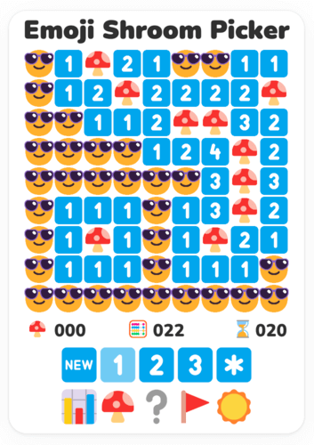
The mushroom theme.
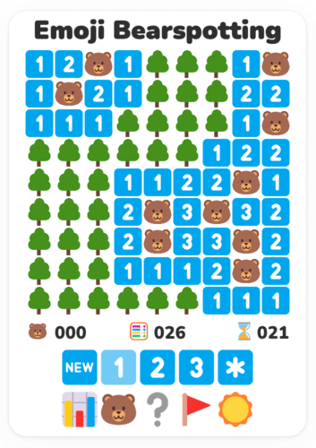
The bear theme.
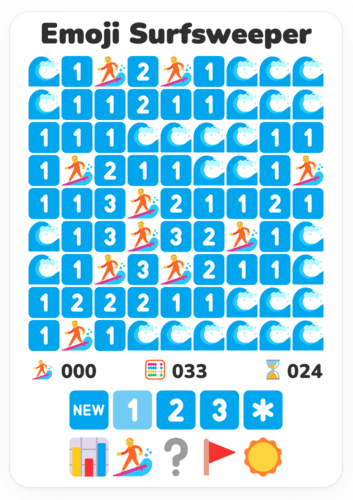
The surf theme.
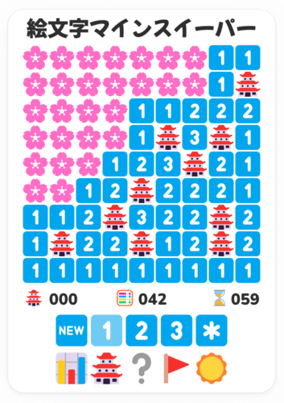
And the Japan theme. I bet you can't decide which one to pick! Your level and theme preferences are saved in your computer, so your next game always starts with the lastly used configuration.
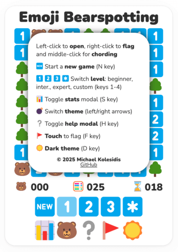
If you forget the basic controls you can click the help button ❔ to toggle the help modal. You can also toggle the help modal by pressing the H key.
The 🔈 button toggles game sound.
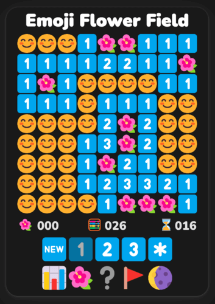
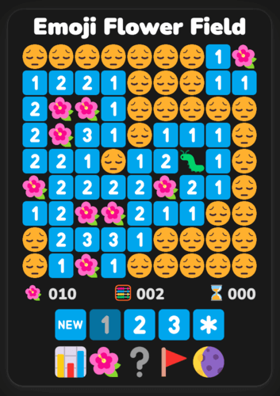
Clicking on the ☀️/🌔 button allows players to choose between light and dark mode. You can also switch between dark and light by pressing the D key. Quite useful for those long night sessions!
Lastly, we should mention the concept of chording. When an uncovered square with a number has exactly the correct number of adjacent squares flagged, left-clicking or middle-clicking it will uncover all unmarked adjacent squares. This is called a chord. It is a basic technique that allows players to clear squares using flags, and the reason why flagging styles are often more efficient than non-flagging ones.
Keyboard Mode
On desktop, press K to toggle keyboard mode. Every square displays its cell number; unopened cells show the number normally, while flagged cells and opened numbered cells keep a dimmed number so you can still target them. Type a cell number, then press Enter to open that square. If the addressed square is already open and numbered, Enter attempts a chord. Type a cell number and press F to flag or unflag that square. Press Esc to clear the typed number if you make a mistake. While keyboard mode is active, number keys are used for cell entry, so 1, 2, 3, and 4 do not change levels.
Summary
- Left-click to open a square
- Right-click to flag a square (that you think contains a mine)
- Left-click an open numbered square for chording
- Middle-click an open numbered square for chording
- 💣 Mines counter
- 🧮 Moves counter
- ⌛ Time counter
- 🆕 restarts the game
- 1️⃣2️⃣3️⃣*️⃣ buttons switch between levels (beginner, intermediate, expert, and custom)
- 📊 button toggles the stats modal
- 💣/🌺/🍄/🐻/🏄/🏯 button switches between themes (mine, flower, mushroom, bear, surf, and Japan); right-click or long press opens the theme menu
- ❔ button toggles the help modal
- 🔊 button toggles sound
- ☀️/🌔 button toggles dark mode
- There is an Easter egg in the game, can you find it?
Keyboard Controls
| Key | Action |
|---|---|
| Ν | New game (current level and theme) |
| S | Open/close stats modal |
| 1 | Switch to beginner level |
| 2 | Switch to intermediate level |
| 3 | Switch to expert level |
| 4 | Switch to custom level |
| 5 | Open custom level modal |
| K | Toggle keyboard mode |
| Number + Enter | Open/chord that numbered cell |
| Number + F | Flag/unflag that numbered cell |
| Left Arrow | Switch to next theme |
| Right Arrow | Switch to previous theme |
| H | Open/close help modal |
| M | Mute/unmute sound |
| D | Toggle dark mode |
| Esc | Close open modal |
More Screenshots
Intermediate Level
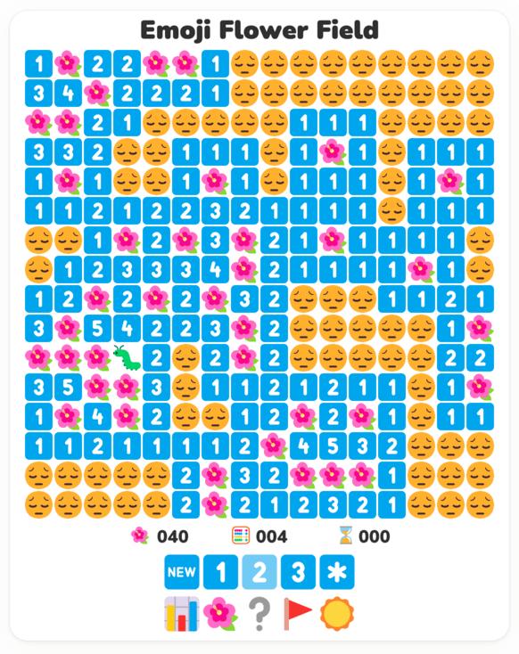
Expert Level
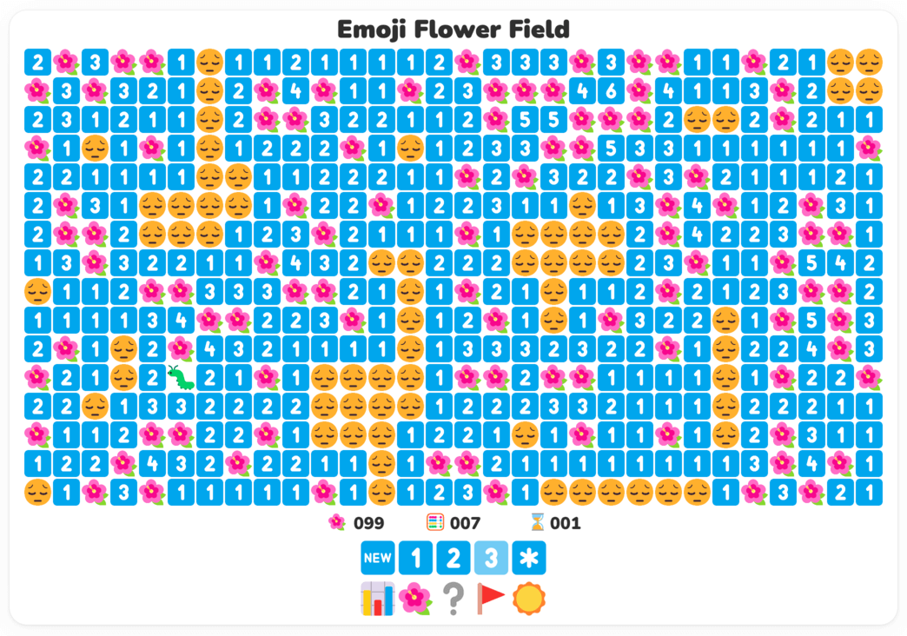
Emoji
The following emoji are used throughout the game:
🔲 ⬜️ 🔳 ⬛ 🆕 1️⃣ 2️⃣ 3️⃣ 4️⃣ 5️⃣ 6️⃣ 7️⃣ 8️⃣ *️⃣ 📊 ↕️ ↔️ 🚩 ⌛ 🧮 ❔ ❌ 🥳 ☀️ 🌔
Themes & Emoji Sets
| Theme | Game Title | Emoji Set |
|---|---|---|
| Mine | Emoji Minesweeper | 💣 💥 😄 😵 |
| Flower | Emoji Flower Field | 🌺 🐛 😊 😔 |
| Mushroom | Emoji Shroom Picker | 🍄 🦄 😎 😵💫 |
| Bear | Emoji Bearspotting | 🐻 🐾 🌳 🪵 |
| Surf | Emoji Surfsweeper | 🏄 🦑 🌊 🦈 |
| Japan | 絵文字マインスイーパー | 🏯 👺 🌸 😖 |
Emoji Font
The emoji font used in the game is the Segoe UI Emoji font that can be found here. If you are running Windows 11, this font family is already installed on your computer. If you are running Linux, you can install and use the Segoe UI font family by following these instructions.
Emoji History
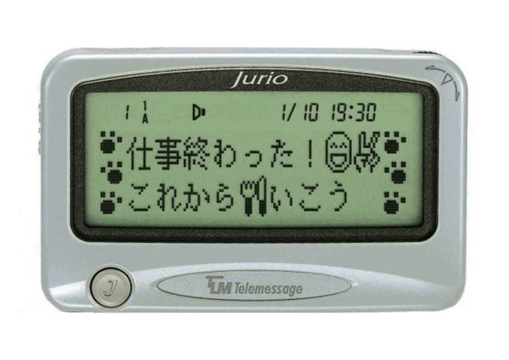
The first ever modern emoji existed on a device that came even before phones. In 1995, Japanese Telecom Company NTT DoCoMo made the first emoji available on its Pocket Bell pager model. As you can see, Emoji Minesweeper is using some of these very first emoji!
You can find more information about the history of emoji here.
International Campaign to Ban Landmines
Antipersonnel landmines are explosive devices designed to be detonated by the presence, proximity, or contact of a person. Placed under or on the ground, they can lie dormant for years and even decades until a person or animal triggers their detonating mechanism.
Incapable of distinguishing between the footfall of a soldier and that of a child, antipersonnel mines cannot be aimed. They indiscriminately kill or injure civilians, aid workers, peacekeepers, and soldiers alike. They pose a threat to the safety of civilians during conflicts and long afterwards.
The International Campaign to Ban Landmines (ICBL) is a coalition of non-governmental organizations whose stated objective is a world free of anti-personnel mines and cluster munitions, where mine and cluster munitions survivors see their rights respected and can lead fulfilling lives. We urge you to visit their website, get informed, and support their work in any way possible.
The ICBL, in close partnership with a small number of states, the ICRC, and the UN, put in motion what was later known as the “Ottawa Process” that led to the adoption of the Mine Ban Treaty in September 1997. The Mine Ban Treaty, which includes a comprehensive ban on all antipersonnel mines as well as several measures to redress the harm from past use, was adopted in Oslo (Norway) in September 1997, and opened for signature on 3 December 1997 in Ottawa (Canada).
License
Copyright (c) Michael Kolesidis
Licensed under the
GNU Affero General Public License v3.0.